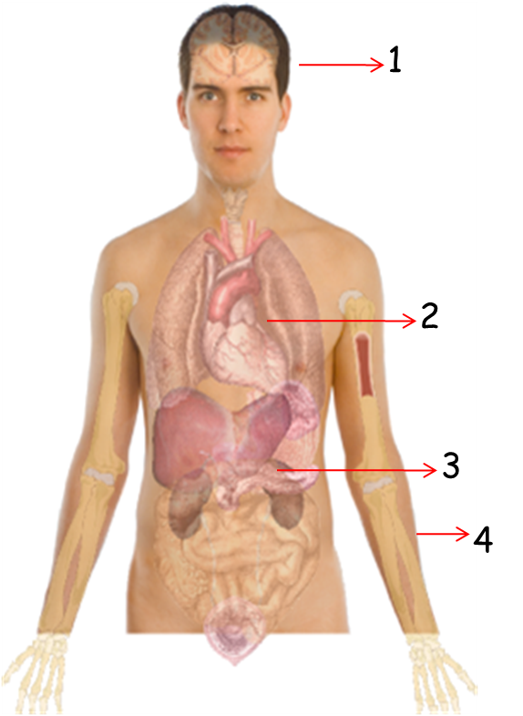

1. Recuperação de células neurológicas, como no caso de portadores de mal de Parkinson
2. Substituição de células cardíacas lesionadas por um infarto
3. Recuperação das células pancreáticas de diabéticos
4. Cultivo e enxerto de tecido epitelial em vítimas de queimaduras